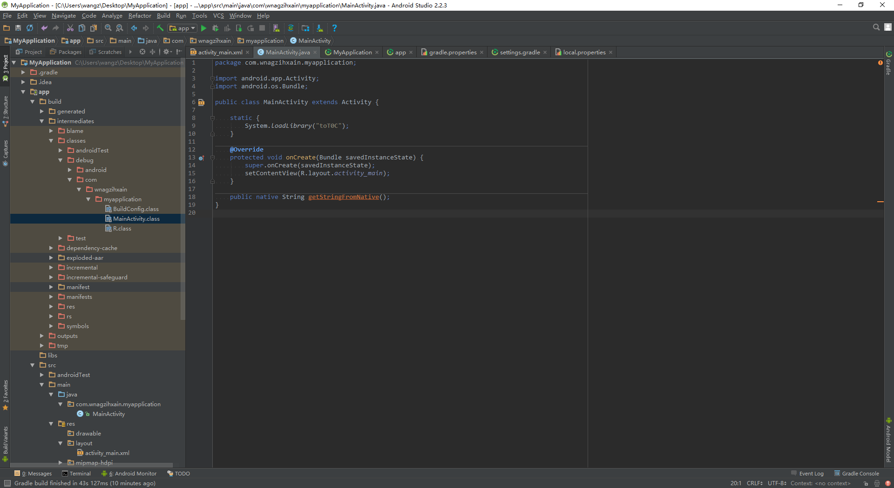

Author：wnagzihxain
Mail：tudouboom@163.com
每个人都有自己的学习方法，我学习ARM汇编的方法就是先正向编程，然后用IDA逆向，对照着源码一句一句读，总结出经验，这一系列so逆向的分享适合有Java层逆向经验，会使用Android Studio开发，会C/C++，Java编程，但是不会so逆向或者说没有接触过so逆向同时准备学习so逆向的同学，不需要掌握很深入，常用的语法以及用法知道就行，不常用或者说看到某种语法，虽然自己不知道什么意思，但是可以自己通过搜索引擎搜索相关的知识学习掌握，有这种能力就行
C和C++，一个面向过程，一个面向对象，都可以用于NDK开发，但是它们有什么区别呢？
这要在源码中寻找答案了
我们先来编译一个包含so的APK，很多教程都喜欢"Hello JNI"，那么我们这里也来一个
使用Android Studio创建Android工程，SDK版本4.4
声明调用的so文件，并定义一个静态native函数getStringFromNative()
MainActivity.java
package com.wnagzihxain.myapplication;
import android.app.Activity;
import android.os.Bundle;
import android.widget.Toast;
public class MainActivity extends Activity {
static {
System.loadLibrary("totoc");
}
public native static String getStringFromNative();
@Override
protected void onCreate(Bundle savedInstanceState) {
super.onCreate(savedInstanceState);
setContentView(R.layout.activity_main);
Toast.makeText(this, getStringFromNative(), Toast.LENGTH_LONG).show();
}
}
执行Make Project
Build -> Make Project
接着可以在app/build/intermediates/classes/debug下面看到生成的class文件

然后在app/src/main/java下面执行
C:\Users\wangz\Desktop\MyApplication\app\src\main\java>javah com.wnagzihxain.myapplication.MainActivity
生成一个头文件
com_wnagzihxain_myapplication_MainActivity.h
我们修改一下头文件名为totoc.h
在app/src/main下新建jni文件夹，跟java同目录
将刚刚生成的头文件移动到jni下面
新建C++ Source文件totoc.cpp
将头文件中生成的函数信息复制进去，修改参数并添加返回语句
//
// Created by wnagzihxain on 2016/12/17 0017.
//
#include <iostream>
#include <jni.h>
#include "totoc.h"
using namespace std;
/*
* Class: com_wnagzihxain_myapplication_MainActivity
* Method: getStringFromNative
* Signature: ()Ljava/lang/String;
*/
JNIEXPORT jstring JNICALL Java_com_wnagzihxain_myapplication_MainActivity_getStringFromNative(JNIEnv *env, jclass clazz)
{
return env->NewStringUTF("Hello From JNI!");
}
关于函数定义前面的JNIEXPORT和JNICALL是什么意思，可参考下面这个
#define JNIEXPORT __declspec(dllexport)
#define JNIIMPORT __declspec(dllimport)
#define JNICALL __stdcall
修改build.gradle
默认的配置如下：
apply plugin: 'com.android.application'
android {
compileSdkVersion 25
buildToolsVersion "25.0.1"
defaultConfig {
applicationId "com.wnagzihxain.myapplication"
minSdkVersion 19
targetSdkVersion 25
versionCode 1
versionName "1.0"
testInstrumentationRunner "android.support.test.runner.AndroidJUnitRunner"
}
buildTypes {
release {
minifyEnabled false
proguardFiles getDefaultProguardFile('proguard-android.txt'), 'proguard-rules.pro'
}
}
}
dependencies {
compile fileTree(dir: 'libs', include: ['*.jar'])
androidTestCompile('com.android.support.test.espresso:espresso-core:2.2.2', {
exclude group: 'com.android.support', module: 'support-annotations'
})
compile 'com.android.support:appcompat-v7:25.0.1'
testCompile 'junit:junit:4.12'
}
改一下：
apply plugin: 'com.android.model.application'
model {
android {
compileSdkVersion 25
buildToolsVersion "25.0.1"
defaultConfig {
applicationId "com.wnagzihxain.myapplication"
minSdkVersion.apiLevel 19
targetSdkVersion.apiLevel 25
versionCode 1
versionName "1.0"
testInstrumentationRunner "android.support.test.runner.AndroidJUnitRunner"
}
buildTypes {
release {
minifyEnabled false
proguardFiles.add(file("proguard-rules.pro"))
}
}
ndk {
moduleName "totoc"
stl "stlport_static"
ldLibs.addAll(["log", "z", "android"])
abiFilters.addAll(['armeabi', 'armeabi-v7a'])
}
}
}
dependencies {
compile fileTree(dir: 'libs', include: ['*.jar'])
androidTestCompile('com.android.support.test.espresso:espresso-core:2.2.2', {
exclude group: 'com.android.support', module: 'support-annotations'
})
compile 'com.android.support:appcompat-v7:25.0.1'
testCompile 'junit:junit:4.12'
}
讲解一下参数：
moduleName "totoc"//so的名字
stl "stlport_static"//以静态链接方式使用的stlport版本的STL
ldLibs.addAll(["log", "z", "android"])
abiFilters.addAll(['armeabi', 'armeabi-v7a'])
关于NDK编译的配置我在这里推荐几篇文章，虽然是mk，但是参数的解释大概是一样的
网易云捕的博客：Android NDK编译选项设置
CSDN-oZuiJiaoWeiYang的专栏：eclipse as android jni 和 ndk以及调用过程--tread
修改项目的build.gradle
// Top-level build file where you can add configuration options common to all sub-projects/modules.
buildscript {
repositories {
jcenter()
}
dependencies {
classpath 'com.android.tools.build:gradle:2.2.3'
// NOTE: Do not place your application dependencies here; they belong
// in the individual module build.gradle files
}
}
allprojects {
repositories {
jcenter()
}
}
task clean(type: Delete) {
delete rootProject.buildDir
}
改为
// Top-level build file where you can add configuration options common to all sub-projects/modules.
buildscript {
repositories {
jcenter()
}
dependencies {
classpath 'com.android.tools.build:gradle-experimental:0.8.3'
// NOTE: Do not place your application dependencies here; they belong
// in the individual module build.gradle files
}
}
allprojects {
repositories {
jcenter()
}
}
task clean(type: Delete) {
delete rootProject.buildDir
}
改完后Sync
等待构建完成我们就可以编译签名我们的APK了
一段漫长的等待后，APK编译签名好了
运行起来，弹出了Toast
所有步骤和C++版本一样，有区别的两处是
新建C++ Source文件totoc.cpp改为新建C Source文件totoc.c
totoc.c文件内容修改为如下
//
// Created by wnagzihxain on 2016/12/17 0017.
//
#include <jni.h>
#include "totoc.h"
/*
* Class: com_wnagzihxain_myapplication_MainActivity
* Method: getStringFromNative
* Signature: ()Ljava/lang/String;
*/
JNIEXPORT jstring JNICALL Java_com_wnagzihxain_myapplication_MainActivity_getStringFromNative(JNIEnv *env, jclass clazz)
{
return (*env)->NewStringUTF(env, "Hello From JNI!");
}
然后编译就行
JNI：Java Native Interface，类似一种标准，提供了很多的API，使Java可以和C/C++进行通信
NDK：Native Development Kit，这是一套工具或者说是一套组件，实现用C/C++来开发Android Application
首先大概看一下代码，头文件的引入很好理解没有问题，然后是定义原生方法，来看原生方法的命名：
Java_com_wnagzihxain_myapplication_MainActivity_getStringFromNative
Java_：前缀
com_wnagzihxain_myapplication_MainActivity：完整的类路径
getStringFromNative：Java层中定义的方法名
完整的定义方式：
JNIEXPORT jstring JNICALL Java_com_wnagzihxain_myapplication_MainActivity_getStringFromNative(JNIEnv* env, jclass clazz)
我们记得在Java层中，并没有传递参数进来，只是纯粹的调用了这个原生方法，但是这里有两个参数，好了，这里就是很重要的一处关于C和C++在NDK开发中不一样的地方，第一个参数是env，如果使用C开发，这里的env其实是一个二级指针，最终指向JNINativeInterface的结构，有疑惑对吧，来看JNI.h中对这个结构的定义
typedef const struct JNINativeInterface* JNIEnv;
所以结合上面的原生方法定义形式，相当于
const struct JNINativeInterface** env;
顺便补充看一下这个结构体的定义，方法非常多，后面省略了
struct JNINativeInterface {
void* reserved0;
void* reserved1;
void* reserved2;
void* reserved3;
jint (*GetVersion)(JNIEnv *);
jclass (*DefineClass)(JNIEnv*, const char*, jobject, const jbyte*,
jsize);
jclass (*FindClass)(JNIEnv*, const char*);
jmethodID (*FromReflectedMethod)(JNIEnv*, jobject);
jfieldID (*FromReflectedField)(JNIEnv*, jobject);
/* spec doesn't show jboolean parameter */
jobject (*ToReflectedMethod)(JNIEnv*, jclass, jmethodID, jboolean);
jclass (*GetSuperclass)(JNIEnv*, jclass);
jboolean (*IsAssignableFrom)(JNIEnv*, jclass, jclass);
......
};
如果使用C++来开发的话，同样，先来看定义
typedef _JNIEnv JNIEnv;
那么这时的env就是一个一级指针了，定义相当于
struct _JNIEnv* env;
在JNI.h中的定义，省略了一点
struct _JNIEnv {
/* do not rename this; it does not seem to be entirely opaque */
const struct JNINativeInterface* functions;
#if defined(__cplusplus)
jint GetVersion()
{ return functions->GetVersion(this); }
jclass DefineClass(const char *name, jobject loader, const jbyte* buf,
jsize bufLen)
{ return functions->DefineClass(this, name, loader, buf, bufLen); }
jclass FindClass(const char* name)
{ return functions->FindClass(this, name); }
......
#endif /*__cplusplus*/
};
那么在对比完两种语言开发下的env的差别后，大家对它应该是有一个大概的认识了，同时我们可以注意一下_JNIEnv结构体，里面有一句
const struct JNINativeInterface* functions;
再结合结构体里的代码可以看出来这个结构体里的方法实现也是通过functions指针对JNINativeInterface结构体里的方法进行调用，也就是说无论是C还是C++，最后都调用了JNINativeInterface结构体里的方法，如果不考虑详细调用形式的话，那么大概就是上面这个情况
再来对比一下具体的代码：
return (*env)->NewStringUTF(env, "Hello From JNI!"); //C
return env->NewStringUTF("Hello From JNI!"); //C++
第一个参数就讲到这里，然后来看第二个参数，在Java中，有实例方法和静态方法，两种都可以在Java层通过添加native关键字来声明
Java层：
public native String getStringFromNative(); //实例方法
public native static String getStringFromNative(); //静态方法
native层：
//实例方法
JNIEXPORT jstring JNICALL Java_com_wnagzihxain_myapplication_MainActivity_getStringFromNative(JNIEnv* env, jobject thiz)
//静态方法
JNIEXPORT jstring JNICALL Java_com_wnagzihxain_myapplication_MainActivity_getStringFromNative(JNIEnv* env, jclass clazz)
可以看出来实例方法和静态方法的第二个参数不一样，实例方法是jobject类型，而静态方法是jclass类型，是这样的，如果是实例方法，那么必然是通过获取实例进行引用，而静态方法则没有实例，只能通过类引用
回到开头，还记不记得我们说在调用getStringFromNative()的时候，并没有进行参数传递，但是在native里却有两个参数env和thiz这个问题，这个点非常重要，因为在IDA反编译so的时候，并不会识别的非常准确，需要我们去修复，靠的就是这些小Tips
最后来看数据类型，还是在JNI.h里面
还是很好理解的，简单看一下就好
#ifdef HAVE_INTTYPES_H
# include <inttypes.h> /* C99 */
typedef uint8_t jboolean; /* unsigned 8 bits */
typedef int8_t jbyte; /* signed 8 bits */
typedef uint16_t jchar; /* unsigned 16 bits */
typedef int16_t jshort; /* signed 16 bits */
typedef int32_t jint; /* signed 32 bits */
typedef int64_t jlong; /* signed 64 bits */
typedef float jfloat; /* 32-bit IEEE 754 */
typedef double jdouble; /* 64-bit IEEE 754 */
#else
typedef unsigned char jboolean; /* unsigned 8 bits */
typedef signed char jbyte; /* signed 8 bits */
typedef unsigned short jchar; /* unsigned 16 bits */
typedef short jshort; /* signed 16 bits */
typedef int jint; /* signed 32 bits */
typedef long long jlong; /* signed 64 bits */
typedef float jfloat; /* 32-bit IEEE 754 */
typedef double jdouble; /* 64-bit IEEE 754 */
#endif
然后是数组类型，区分了C和C++
#ifdef __cplusplus
/*
* Reference types, in C++
*/
class _jobject {};
class _jclass : public _jobject {};
class _jstring : public _jobject {};
class _jarray : public _jobject {};
class _jobjectArray : public _jarray {};
class _jbooleanArray : public _jarray {};
class _jbyteArray : public _jarray {};
class _jcharArray : public _jarray {};
class _jshortArray : public _jarray {};
class _jintArray : public _jarray {};
class _jlongArray : public _jarray {};
class _jfloatArray : public _jarray {};
class _jdoubleArray : public _jarray {};
class _jthrowable : public _jobject {};
typedef _jobject* jobject;
typedef _jclass* jclass;
typedef _jstring* jstring;
typedef _jarray* jarray;
typedef _jobjectArray* jobjectArray;
typedef _jbooleanArray* jbooleanArray;
typedef _jbyteArray* jbyteArray;
typedef _jcharArray* jcharArray;
typedef _jshortArray* jshortArray;
typedef _jintArray* jintArray;
typedef _jlongArray* jlongArray;
typedef _jfloatArray* jfloatArray;
typedef _jdoubleArray* jdoubleArray;
typedef _jthrowable* jthrowable;
typedef _jobject* jweak;
#else /* not __cplusplus */
/*
* Reference types, in C.
*/
typedef void* jobject;
typedef jobject jclass;
typedef jobject jstring;
typedef jobject jarray;
typedef jarray jobjectArray;
typedef jarray jbooleanArray;
typedef jarray jbyteArray;
typedef jarray jcharArray;
typedef jarray jshortArray;
typedef jarray jintArray;
typedef jarray jlongArray;
typedef jarray jfloatArray;
typedef jarray jdoubleArray;
typedef jobject jthrowable;
typedef jobject jweak;
#endif /* not __cplusplus */
如果在编译过程遇到问题，一定要自己搜索解决，编译这一关很重要